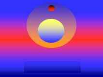
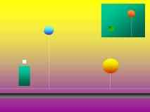
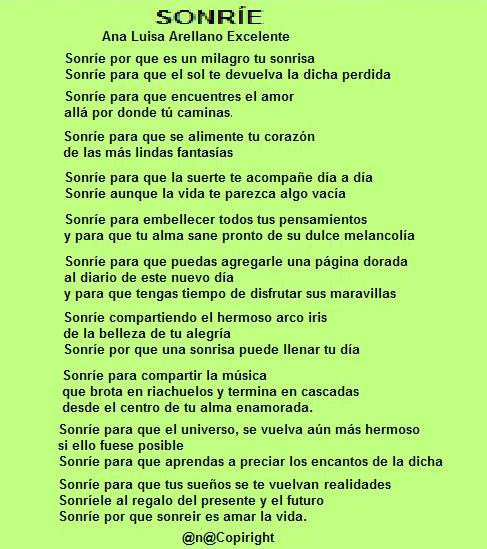

Serenidad de atardecer
Serenidad de atardecer
 |
 |
La poesía de Ana Luisa Arellano Excelente (México)
|
Las imágenes de esta página son diseños de Fernando Cianciola, Córdoba, Argentina
Algunos Anteriores
Sonríe...

ENAMORARSE
Tu Amor....
Es es el fulgor de los diamantes
@n@copyright
CORAZÓN DE NIÑA
. . . .
LOS PEGAZOS DEL ALMA Hay algunos sueños que no se van
a realizar Donde el entorno verdadero se diluye Un poema.. ese espacio perfecto para imaginar;
|
Un poema... que nos revela mundos que creímos
perdidos
y nos regala la fantástica ilusión
de crearnos universos nuevos
donde no existen límites distantes o ajenos ...
Sólo existen los pegazos del alma
que atrapan nuestros sentidos
y aunque que tal vez nunca lleguen
siempre estarán presentes muy dentro del corazón.
. . .
AHORA QUE NO ESTÁS.
Sé que el tiempo
se va quedando siempre
lentamente y poco a poco
con todos nuestros sueños.
Aún así, ahora que partiste de mi lado,
me gusta imaginarte descansando
a orillas del sol naciente,
en un día luminoso y tibio.
En un hermoso oasis
de intensísimos colores,
jugando los dos muy juntos,
como gotitas de agua en la cascada.
Me gusta imaginarte en tu universo de cometas
cuidando tu rebaño de delfines,
mientras el sol te baña con su luz dorada
y el cielo nunca te anuncia su crepúsculo.
Me gusta imaginar que ahora habitas
en un dulce paraíso donde el mar no tiene
ni fin ni principio, y tú le prestas
tu calor al brillo del agua.
Me gusta imaginarte
en ese mundo intangible, donde el aire
se fragmenta en sueños y la luna se adorna
para ti, siempre con destellos nuevos.
Me gusta imaginar que al fin nos encontramos,
y como una chiquilla me extiendes tus brazos
y volvemos a compartir
nuevamente todos nuestros sueños.
Y ahora que no estás quiero decirte...
Que mi corazón te llama y sé que tú me escuchas,
que mi pensamiento vuelve a ti constante,
que la chispa de tu amor nunca se extingue
que tu recuerdo es el pan y la sal de mi hambre.
Que se mantiene intacta la emoción que me trajiste,
que tu presencia inolvidable continúa
aleteando en el viento, y que siempre te amaré,
de aquí hasta donde termina el cielo.
--
" El Amor es una llama
que cuando se enciende,
ni el tiempo puede apagarla"
@n@
. . .
CONFESIONES
Hora tras eterna hora,
eres el cometa que me ilumina los sueños,
el fuego de mi pasión arrolladora,
una llama que se aviva con el viento
y juega con mi piel ardiente,
en esas madrugadas...
donde termina la leyenda
y la vida de nuevo comienza a rienda suelta,
donde la magia se presenta,
con todos sus brebajes
y sus perfumes nuevos e inocentes,
en ese fascinante drama
lleno de amor y ficción
que nos invita a tentar a la suerte
a cambiar los inviernos en veranos
a quitarle los colmillos al reloj eterno,
ese lobo hambriento
que trata de robar las alas
de las dulces mariposas
que aletean en nuestras almas.
Noche tras eterna noche
te confieso que te quiero,
que existen para mí,
dos cosas imposibles de evitar...
Amarte y recordarte;
y que existe una palabra
para cada sentimiento...
Menos para expresar
todas las cosas que por ti yo siento
cuando me arropo en las galaxias
de tu dulce universo...
. . .
A pesar de todo...
A pesar de todo
lo que tu alma esté sintiendo,
el día aún sigue siendo bello...
por mis antojos y tus besos.
Y si te tomas tu tiempo,
y miras hacia el horizonte etéreo,
puedes darte cuenta que,
los resultados siempre son hermosos.
Porque al final
todo en la vida resulta en
amar y querer ...
Si... el amor viene primero...
después los besos
y entonces nos damos cuenta
de que estamos hechos
de la misma esencia...
Y de que somos dos latidos en uno;
entonces nos damos cuenta
que la vida es un poema
y una oportunidad
para encontrar la dicha.
Es entonces que puedo darme cuenta,
mientras acaricio
el satén impalpable de tu piel amada...
Que la dulce fragancia de tu amor
está conmigo...
aunque tú te encuentres,
a muchas millas, a lo lejos.
. . . . .
Misterio
Un hechizo sólo, no es suficiente
el amor es quien le da su fuerza,
cuando el crepúsculo cierra
las ventanitas del horizonte.
El amor es aquello que da su voz al sentimiento,
es un dorado misterio que nos regala el cielo
para romper el espacio y el tiempo.
Es un huracanado viento que nos hacer temblar
como palmera solitaria en el desierto,
cuando la lluvia seca sus ojos
y deja asomarse al cielo.
Es un Domingo cualquiera
que se desliza en el azul del cielo
y nos enseña mil universos nuevos.
Es un fuego alegre brillando en la chimenea,
es todo eso que habita dentro de los sueños
cuando la noche baja en silencio
y deja todo en penumbras.
Es un juego que se aprende muy dentro del alma,
una joya luminosa que se prende al corazón
y ya con nada se arranca.
El amor no es el mismo cielo, pero...
cuando el viento frota su cara con la mía
y el amor abre sus ojos y me mira,
¡Ah...! Como se parece al cielo.
BESOS DE NIEBLA
El último sol de nuestro amor se está
poniendo
dejándome en la piel, sus tristes besos de niebla.
Se ha fragmentado en trozos de cristal el sueño.
Sólo hay rutina entre los dos, sólo
caricias serenas,
ya no hay prisas ni carreras…ni un sueño, una ilusión
o un beso que inicie la tormenta.
Tal vez deba dejar que se apague para siempre la
quimera
mientras mi corazón se rompe entre el silencio
y la soledad se adueña de mi vida entera.
Tal vez yo deba desafiar el miedo
despojarme de esta piel… nacer de nuevo..
Y no dejar que la rosa del amor
pierda su luz, su último fuego…
y ese perfume azul de su eterna belleza .
El último sol de nuestro amor se está
poniendo…
tal vez el melodía de un nuevo amor venga a mi encuentro
y apagando tu tenue luz… me recueste a esperarlo ilusionada...
. . . .
DESDE OTRAS TIERRAS
Y aún sigo yo aquí,
en estas tierras...
queriendo zambullirme entre tus brazos,
queriendo que tu amor
siga haciendo brillar el día
Queriendo adivinar esos secretos
que esconde
misteriosa y tentadora tu sonrisa...
Aún sigo aquí
deseando ignorar al padre tiempo
para volverme un ovillo de luz
que dibuje mil universos en tu vida..
Aún sigo aquí
queriendo descifrar
¿cómo sería
sentir sobre mi piel
el excitante lenguaje de tus manos,
que mi cuerpo, bien entendería?
Aún sigo aquí
regando con mis besos tus recuerdos
queriendo que este amor tan luminoso y mágico
como esa espuma de luz que es nuestra luna,
nunca se extinga.
Aún sigo aquí
en ésta dimensión ficticia
en éste laberinto placentero
donde tus besos bulliciosos como niños
llenan al límite mi cuerpo con caricias
y el fuego de tu amor,
desde otra tierras...
sigue alumbrándome la vida
. . .
LA PIEL DE TU SOMBRA
Se me incendia la sangre cada que me atrapas,
cada vez que tu sombra me hace presa
del antojo de tu delicioso fuego.
Se me hielan una a una, las páginas del alma...
cada vez que me captas
para acariciarme, para descifrarme...
Para estremecerme a la luz de tus deseos
que encienden mi pasión
y mis más hondos secretos.
Se me quema el aire
cada vez que anhelo, la piel de tu sombra
dentro de mi cuerpo húmedo de besos.
La piel de tu sombra me tiene cautiva
si juegas conmigo cada madrugada
bajo las cambiantes galas de la luna.
Tú pasión domina todo y me haces sentir fascinada
cuando siento entrar en mí
la piel de tu sombra salvaje y delicada.
Cuando empiezas a rozar mis labios
y tus labios me muerden la piel con furia loca
suspirando delirios en mi pecho.
Es entonces cuando siento que el amor ha regresado
y todo grita en mí, de un modo sensual y voluptuoso,
que...¡Te necesito!
. . .
NAVIDAD SIN TI
En esta navidad, yo sólo pienso en ti
¿cómo voy a celebrarla si tú no estás aquí?
no hay dulces ni guirnaldas en mi alma
nada es igual sin ti...
El vuelo de la luna se detuvo
el brillo de las luces parece congelado
las gingle bells no entibian el ambiente
con su ding dong alegre.
Ya no hay más tiernos duendes
ni adornos, ni regalos, ni besos con abrazos.
La nieve ya no canta villancicos como siempre.
Mi corazón se siente solo,
la navidad ya no significa nada para mí.
La estrella de los sueños se ha apagado para mí.
El concierto de la vida se ha callado para siempre
por que tu no estás aquí.
. . . . .
---------------------------------------
El amor para existir
necesita mirarse en otros ojos
refugiarse en otros labios...
cobijarse en otro cuerpo...
@n@
E-mail: sheresada@gmail.com
@n@ Copyright © 2008 -
Todos los derechos reservados.
Volver
| Es licenciada en Medicina desde
1985. Actualmente cursa Psicología, en cuyo ámbito tiene
pensado desarrollar su actividad en la especialidad de la Psicología
Geriátrica.
Entre sus aficiones están la música, la lectura, el deporte y la naturaleza. Le encanta disfrutar las puestas de sol, dejando que sus sueños viajen por el azul del cielo para escribir acerca de algunas de las formas como se manifiesta el amor, que para ella es lo mas maravilloso que tiene la vida. Mujer sensible, romántica cariñosa y sentimental, gusta de escribir para compartir mis sentimientos. Aficionada
a la lectura desde la niñez, en sus ratos libres agrada escribir
cuentos para niños y, últimamente, practica con diáfana
desenvoltura un tipo de poesía subjetivo-romántica, que
se manifiesta en una lírica pletórica de ternura y humanidad.
«Algunos de mis poemas van dedicados a alguien especial que, de
una u otra forma, ha llenado un espacio en algún momento de mi
vida y que me ha dado el material del cual están hechas las ilusiones
para escribir mis versos», ha afirmado. |